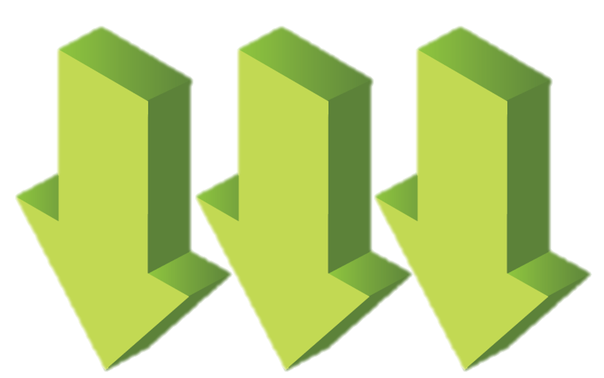
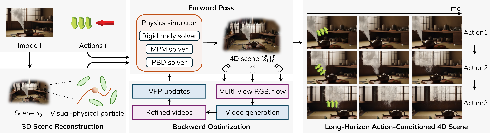

We propose PerpetualWonder, a hybrid generative simulator that generates a 4D scene with long-horizon actions and a single image. Here we show a side-by-side comparison for a three-step action sequence (top to bottom, actions overlaid on the images). The left and right image blocks show renderings from two different viewpoints.
Long-Horizon Action-Conditioned 4D Scenes
PerpetualWonder generates 4D scenes from a single image and sequential input actions.
It predicts the physical consequences of the sequential input actions.
Here, we present video results covering three rounds of interactions rendered with a moving camera from left to right, overlaid with action visualizations.
Comparisons with Baselines
PerpetualWonder supports long-horizon 4D scene generation, which can be rendered from novel views.
Here, we show side-by-side comparisons with different baselines, including a hybrid simulator and video generators.
Please click on the images and baselines buttons to view the comparisons across three rounds of interactions with the same predefined camera trajectory.
The force types in the videos are indicated by icons: indicates point force, while  indicates global force including gravity and wind.
PerpetualWonder (Ours)
WonderPlay
PerpetualWonder (Ours)
GEN3C
PerpetualWonder (Ours)
Wan2.2
PerpetualWonder (Ours)
WonderPlay
PerpetualWonder (Ours)
GEN3C
PerpetualWonder (Ours)
Wan2.2
PerpetualWonder (Ours)
WonderPlay
PerpetualWonder (Ours)
GEN3C
PerpetualWonder (Ours)
Wan2.2
Interactive Viewer of Generated Interactive 4D Scene
View the generated interactive 4D scene in the interactive viewer below.
Keyboard: Move by "W/A/S/D", look around by "I/J/K/L".
Note: Due to the large file size of single-frame 3D Gaussians, the webpage cannot support real-time rendering. We only provide interactive screen recordings here.
Abstract
We introduce PerpetualWonder, a hybrid generative simulator that enables long-horizon, action-conditioned 4D scene generation from a single image. Current works fail at this task because their physical state is decoupled from their visual representation, which prevents generative refinements to update the underlying physics for subsequent interactions. PerpetualWonder solves this by introducing the first true closed-loop system. It features a novel unified representation that creates a bidirectional link between the physical state and visual primitives, allowing generative refinements to correct both the dynamics and appearance. It also introduces a robust update mechanism that gathers supervision from multiple viewpoints to resolve optimization ambiguity. Experiments demonstrate that from a single image, PerpetualWonder can successfully simulate complex, multi-step interactions from long-horizon actions, maintaining physical plausibility and visual consistency.
Overview

Overview of PerpetualWonder. Given an input image, based on the visual-physical aligned particle, we reconstruct a 3D scene from synthesized dense views. Then we iterate between a forward physics pass and a backward neural optimization. The forward pass leverages physical simulation to generate coarse scene dynamics. Then the backward optimization updates the scene according to the multi-view refined videos from the video generation model. The closed-loop system enables long-horizon actions for the final 4D scene generation. The rendered results on the right showcase the generated scene from each consecutive action.